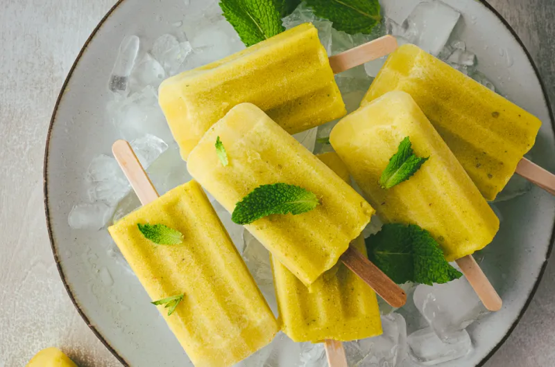
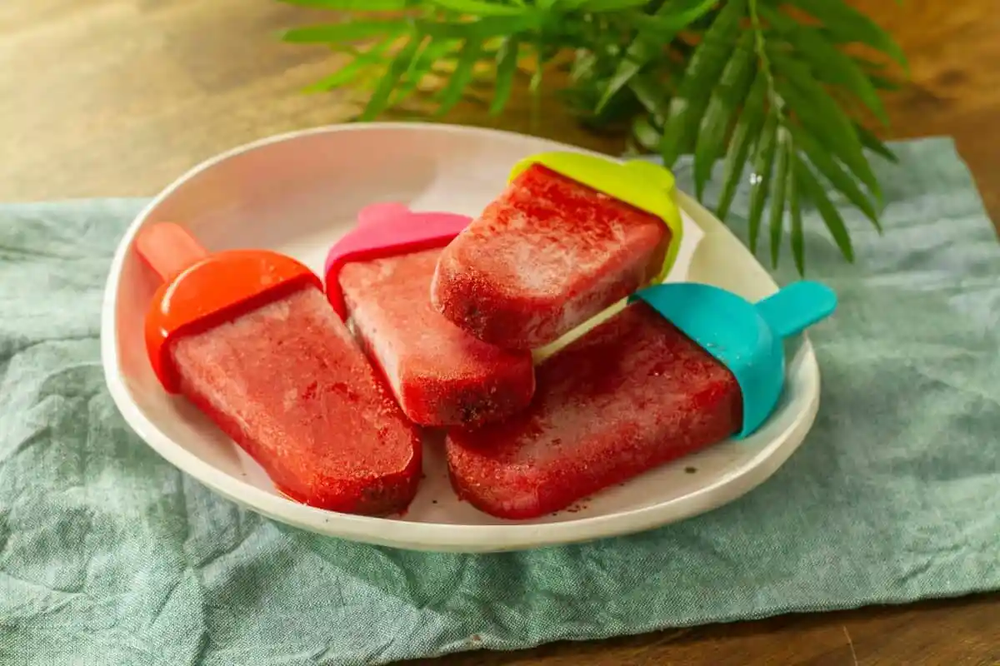
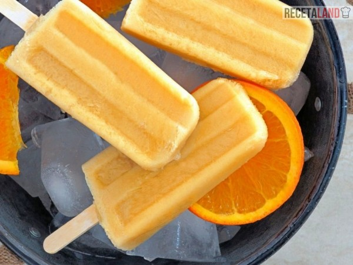
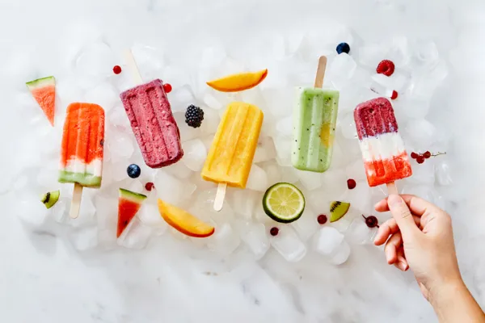

Nosotros
En Vital Chill, nuestro viaje comenzó, cuando un grupo de amigos apasionados por las paletas, donde Acapulco era el mercado perfecto.
Historia y Valores
Fundada en 2023, un sueño que se hizo realidad.
- Calidad: Nos esforzamos por ofrecer el mejor producto utilizando solo ingredientes de primera y técnicas de preparación de excelencia.
- Sostenibilidad: Trabajamos con productores locales y adoptamos prácticas que minimizan nuestro impacto ambiental.
- Comunicación: Valoramos la retroalimentación de nuestros clientes para seguir mejorando día a día.
- Compromiso: Estamos dedicados a la comunidad de Acapulco, colaborando en proyectos sociales y ambientales que beneficien a nuestra ciudad.



